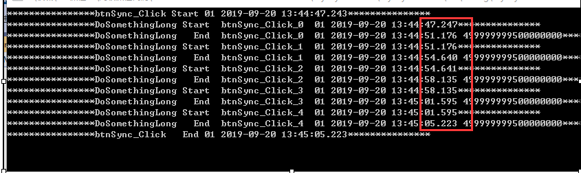
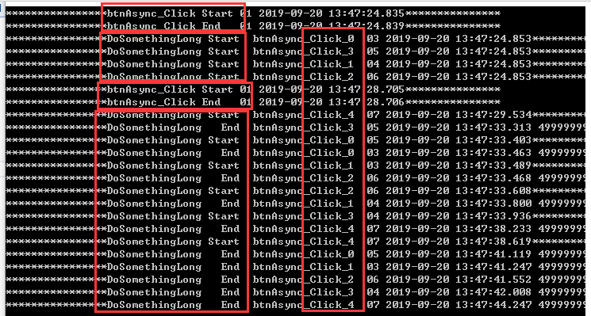
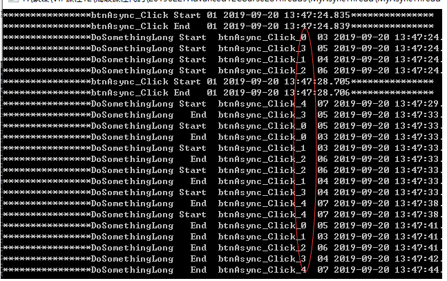
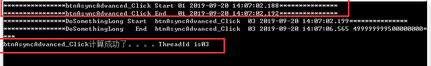
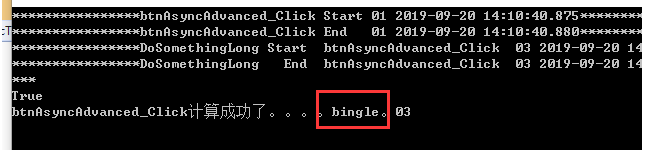
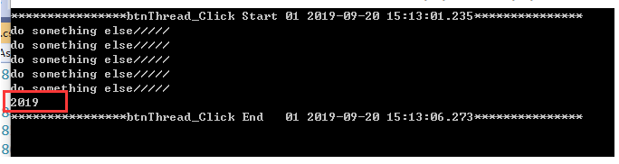
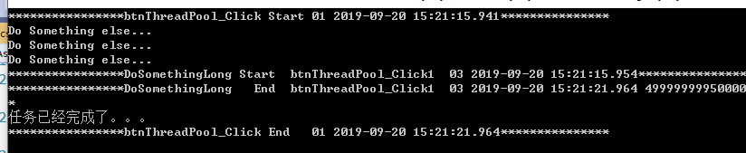
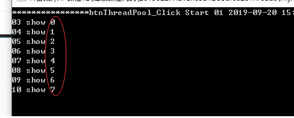

原文连接:https://www.cnblogs.com/taotaozhuanyong/p/11556910.html
刚接触线程的时候，感觉这个东西好神奇。虽然不是很明白，就感觉它很牛逼。
参考了一些大佬写的文章：
https://www.cnblogs.com/yilezhu/p/10555849.html这个大佬写的文章，我还是很喜欢的
https://www.cnblogs.com/mushroom/p/4575417.html
多线程是.NET开发非常重要的一块，很多开发者对多线程几乎不用/很畏惧/不明所以，写代码的时候，没有考虑到多线程的场景。
什么是进程？
计算机概念，程序在服务器运行占据全部计算机资源的综合，是一种虚拟的概念。
当一个程序开始运行时，它就是一个进程，进程包括运行中的程序和程序所使用到的内存和系统资源。
而一个进程又是由多个线程所组成的。
什么是线程？
计算机概念，进程在响应操作时最小单位，也包括CPU、内存、网络、硬盘IO。
线程是程序中的一个执行流，每个线程都有自己的专有寄存器(栈指针、程序计数器等)，但代码区是共享的，即不同的线程可以执行同样的函数。
什么是多线程？
计算机概念，一个进程有多个线程同时运行。
多线程是指程序中包含多个执行流，即在一个程序中可以同时运行多个不同的线程来执行不同的任务，也就是说允许单个程序创建多个并行执行的线程来完成各自的任务。
一个进程会包含很多个线程；线程是隶属于某个进程，进程毁了线程也就没了。
句柄：其实就是个long数字，是操作系统表示应用程序。
C#里面的多线程？
Thread类，是C#语言对线程对象的一个封装。
为什么可以多线程？
1、多个CPU的核可以并行工作，多个模拟线程
四核八线程，这里面的线程值的是模拟核
2、CPU的分片，1S的处理能力分成1000份，操作系统调度着去响应不同的任务。从宏观角度来说，感觉就是多个任务在并发执行；从微观角度来说，一个物理CPU同一时刻，只能为一个任务服务。
同步方法：
发起调用，完成后才继续下一行；非常符合开发思维，有序执行。
简单来说，就是诚心诚意请人吃饭，比如邀请bingle吃饭，但是bingle要忙一会，那就等着bingle完成后再一起去吃饭。
异步方法：
发起调用，不等待完成，直接进入下一行，启动一个新线程开完成方法的计算。
简单来说，就是客气一下的请人吃饭，比如要邀请bingle吃饭，但是bingle要忙一会，那你就忙着吧，我先去吃饭了，你忙完了自己去吃饭吧。
同步方法的代码：


private void btnSync_Click(object sender, EventArgs e)
{
Console.WriteLine($"****************btnSync_Click Start {Thread.CurrentThread.ManagedThreadId.ToString("00")} {DateTime.Now.ToString("yyyy-MM-dd HH:mm:ss.fff")}***************");
int l = 3;
int m = 4;
int n = l + m;
for (int i = 0; i < 5; i++)
{
string name = string.Format($"btnSync_Click_{i}");
this.DoSomethingLong(name);
}
Console.WriteLine($"****************btnSync_Click End {Thread.CurrentThread.ManagedThreadId.ToString("00")} {DateTime.Now.ToString("yyyy-MM-dd HH:mm:ss.fff")}***************");
}
/// <summary>
/// 一个比较耗时耗资源的私有方法
/// </summary>
/// <param name="name"></param>
private void DoSomethingLong(string name)
{
Console.WriteLine($"****************DoSomethingLong Start {name} {Thread.CurrentThread.ManagedThreadId.ToString("00")} {DateTime.Now.ToString("yyyy-MM-dd HH:mm:ss.fff")}***************");
long lResult = 0;
for (int i = 0; i < 1_000_000_000; i++)
{
lResult += i;
}
//Thread.Sleep(2000);
Console.WriteLine($"****************DoSomethingLong End {name} {Thread.CurrentThread.ManagedThreadId.ToString("00")} {DateTime.Now.ToString("yyyy-MM-dd HH:mm:ss.fff")} {lResult}***************");
}调用后，是这个样子的结果;

在这段期间内，界面是卡死的，无法拖动。
异步方法的代码：
private void btnAsync_Click(object sender, EventArgs e)
{
Console.WriteLine($"****************btnAsync_Click Start {Thread.CurrentThread.ManagedThreadId.ToString("00")} {DateTime.Now.ToString("yyyy-MM-dd HH:mm:ss.fff")}***************");
Action<string> action = this.DoSomethingLong;
//action.Invoke("btnAsync_Click_1");
//action("btnAsync_Click_1");
//委托自身需要的参数+2个异步参数
//action.BeginInvoke("btnAsync_Click_1", null, null);
for (int i = 0; i < 5; i++)
{
string name = string.Format($"btnAsync_Click_{i}");
action.BeginInvoke(name, null, null);
}
Console.WriteLine($"****************btnAsync_Click End {Thread.CurrentThread.ManagedThreadId.ToString("00")} {DateTime.Now.ToString("yyyy-MM-dd HH:mm:ss.fff")}***************");
}调用之后的结果是这个样子的：

期间，界面不是卡死的，可以随意拖动。只是界面依然是主线程执行，在里面开启了子线程去执行其他的方法。
同步方法与异步方法的区别：
同步方法：
主线程（UI线程），忙着计算，无暇他顾，界面是卡死的。
异步方法：
主线程闲置，计算任务交给子线程完成，改善用户体验，winform点几个按钮，不至于卡死；web开发，也是一样需要的，发个短信通知，或者下载个Excel，都交给异步线程去做。
同步方法比较慢，因为只有一个线程计算，异步方法快，因为有多个线程并发计算。多线程其实就是用资源换性能。
什么时候用多线程？
1、一个订单表很耗时间，能不能用多线程去优化下性能呢？
答案是不能的，因为这就是一个操作，没法并行。
2、需要查询数据库/调用接口/读硬盘文件/做数据计算，能不能用多线程优化下性能？
这个是可以的。因为多个任务可以并行的，但是多线程并不是越多越好，因为资源有限，而且调度有损耗，多线程尽量避免使用。
我们来看下，上面调用后的执行顺序：

同步方法有序进行，但是异步方法启动无序。因为线程资源是向操作系统申请的，由操作系统的调度决策决定，所以启动是无序的。同一个任务用一个线程，执行时间也是不确定的，是CPU分片导致的。
使用多线程请一定小心，很多事不是想当然的，尤其是多线程操作时间有序要求的时候（async await可以解决这个问题）。那能不能通过延迟一点启动来控制顺序？或者预测下结束顺序？这些都是不靠谱的。就算通过大量的测试，得到的执行顺序和预期的顺序总是相同的，但是只要有概率是不同的，总会发生这种情况。
并行：多核之间叫并行。
并发：CPU分片的并发。
回调：将后续动作通过回调参数传递进去，子线程完成计算后，去调用这个回调委托。
代码：
private void btnAsyncAdvanced_Click(object sender, EventArgs e)
{
Console.WriteLine($"****************btnAsyncAdvanced_Click Start {Thread.CurrentThread.ManagedThreadId.ToString("00")} {DateTime.Now.ToString("yyyy-MM-dd HH:mm:ss.fff")}***************");
Action<string> action = this.DoSomethingLong;
AsyncCallback callback = ar =>
{
Console.WriteLine($"btnAsyncAdvanced_Click计算成功了。。。。ThreadId is{Thread.CurrentThread.ManagedThreadId.ToString("00")}");
};
action.BeginInvoke("btnAsyncAdvanced_Click", callback, null);
}执行结果：

回调传参：
代码：
private void btnAsyncAdvanced_Click(object sender, EventArgs e)
{
Console.WriteLine($"****************btnAsyncAdvanced_Click Start {Thread.CurrentThread.ManagedThreadId.ToString("00")} {DateTime.Now.ToString("yyyy-MM-dd HH:mm:ss.fff")}***************");
Action<string> action = this.DoSomethingLong;
//1 回调：将后续动作通过回调参数传递进去，子线程完成计算后，去调用这个回调委托
IAsyncResult asyncResult = null;//是对异步调用操作的描述
AsyncCallback callback = ar =>
{
Console.WriteLine($"{object.ReferenceEquals(ar, asyncResult)}");
Console.WriteLine($"btnAsyncAdvanced_Click计算成功了。。。。{ar.AsyncState}。{Thread.CurrentThread.ManagedThreadId.ToString("00")}");
};
asyncResult = action.BeginInvoke("btnAsyncAdvanced_Click", callback, "bingle");看下结果，bingle这个参数传递过来了

通过IsComplate等待，卡界面--主线程在等待，边等待边提示
////2 通过IsComplate等待，卡界面--主线程在等待，边等待边提示
////（ Thread.Sleep(200);位置变了，少了一句99.9999）
int i = 0;
while (!asyncResult.IsCompleted)
{
if (i < 9)
{
Console.WriteLine($"bingle{++i * 10}%....");
}
else
{
Console.WriteLine($"bingle99.999999%....");
}
Thread.Sleep(200);
}
Console.WriteLine("已经完成！");WaitOne等待，即时等待 限时等待
asyncResult.AsyncWaitHandle.WaitOne();//直接等待任务完成
asyncResult.AsyncWaitHandle.WaitOne(-1);//一直等待任务完成
asyncResult.AsyncWaitHandle.WaitOne(1000);//最多等待1000ms，超时就不等了//4 EndInvoke 即时等待, 而且可以获取委托的返回值 一个异步操作只能End一次
action.EndInvoke(asyncResult);//等待某次异步调用操作结束Thread类
上面介绍过，Thread是C#对线程对象的一个封装。
Thread:C#对线程对象的一个封装
Thread方法很多很强大，但是也太过强大，而且没有限制
ParameterizedThreadStart method = o => this.DoSomethingLong("btnThread_Click");
Thread thread = new Thread(method);
thread.Start("123");//开启线程，执行委托的内容下面这些，是Obselte的api
//thread.Suspend();//暂停
//thread.Resume();//恢复 真的不该要的，暂停不一定马上暂停；让线程操作太复杂了
//thread.Abort();
////线程是计算机资源，程序想停下线程，只能向操作系统通知(线程抛异常)，
////会有延时/不一定能真的停下来线程等待，有以下写法：
while (thread.ThreadState != ThreadState.Stopped)
{
Thread.Sleep(200);//当前线程休息200ms
}//2 Join等待
thread.Join();//运行这句代码的线程，等待thread的完成
thread.Join(1000);//最多等待1000msthread.Priority = ThreadPriority.Highest;最高优先级，有限执行，但不代表优先完成。是指说在极端情况下，还有意外发生，不能通过这个来控制线程的执行先后顺序。
thread.IsBackground = false;//默认是false 前台线程，进程关闭，线程需要计算完后才退出
//thread.IsBackground = true;//关闭进程，线程退出基于Thread可以封装一个回调，回调：启动子线程去执行动作A----不阻塞---A执行完成后子线程会执行动作B
代码：
private void ThreadWithCallBack(ThreadStart threadStart, Action actionCallback)
{
//Thread thread = new Thread(threadStart);
//thread.Start();
//thread.Join();//错了，因为方法被阻塞了
//actionCallback.Invoke();
//上面那种方式错了， 应该先用threadStart，再调用callback
ThreadStart method = new ThreadStart(() =>
{
threadStart.Invoke();
actionCallback.Invoke();
});
new Thread(method).Start();
}调用测试一下：
ThreadStart threadStart = () => this.DoSomethingLong("btnThread_Click");
Action actionCallBack = () =>
{
Thread.Sleep(2000);
Console.WriteLine($"This is Calllback {Thread.CurrentThread.ManagedThreadId.ToString("00")}");
};
this.ThreadWithCallBack(threadStart, actionCallBack);基于Thread封装一个带返回值的方法：
private Func<T> ThreadWithReturn<T>(Func<T> func)
{
T t = default(T);
ThreadStart threadStart = new ThreadStart(() =>
{
t = func.Invoke();
});
Thread thread = new Thread(threadStart);
thread.Start();
return new Func<T>(() =>
{
thread.Join();
//thread.ThreadState
return t;
});
}调用：
Func<int> func = () =>
{
Thread.Sleep(5000);
return DateTime.Now.Year;
};
Func<int> funcThread = this.ThreadWithReturn(func);//非阻塞
Console.WriteLine("do something else/////");
Console.WriteLine("do something else/////");
Console.WriteLine("do something else/////");
Console.WriteLine("do something else/////");
Console.WriteLine("do something else/////");
int iResult = funcThread.Invoke();//阻塞
Console.WriteLine(iResult);
在调用的时候funcThread.Invoke()，这里发生了阻塞。既要不阻塞，又要计算结果？不可能！
线程池：
Thread，功能繁多，反而不好，就好像给4岁小孩一把热武器，反而会造成更大的伤害，对线程数量时没有管控的。
在.NET Framework2.0，出现了线程池。如果某个对象创建和销毁代价比较高，同时这个对象还可以反复使用，就需要一个池子。保存多个这样的对象，需要用的时候从池子里面获取，用完之后不用销毁，放回池子（享元模式）。这样可以节约资源提升性能；此外，还能管控总数量，防止滥用。ThreadPool的线程都是后台线程。
ThreadPool最简单的使用：
ThreadPool.QueueUserWorkItem(o => this.DoSomethingLong("btnThreadPool_Click1"));
ThreadPool.QueueUserWorkItem(o => this.DoSomethingLong("btnThreadPool_Click2"), "bingle"); //等待
ManualResetEvent mre = new ManualResetEvent(false);
//false---关闭---Set打开---true---WaitOne就能通过
//true---打开--ReSet关闭---false--WaitOne就只能等待
ThreadPool.QueueUserWorkItem(o =>
{
this.DoSomethingLong("btnThreadPool_Click1");
mre.Set();
});
Console.WriteLine("Do Something else...");
Console.WriteLine("Do Something else...");
Console.WriteLine("Do Something else...");
mre.WaitOne();
Console.WriteLine("任务已经完成了。。。");执行结果：

不要阻塞线程池里面的线程：
ThreadPool.SetMaxThreads(8, 8);
ManualResetEvent mre = new ManualResetEvent(false);
for (int i = 0; i < 10; i++)
{
int k = i;
ThreadPool.QueueUserWorkItem(t =>
{
Console.WriteLine($"{Thread.CurrentThread.ManagedThreadId.ToString("00")} show {k}");
if (k == 9)
{
mre.Set();
}
else
{
mre.WaitOne();
}
});
}
if (mre.WaitOne())
{
Console.WriteLine("任务全部执行成功！");
}
程序卡在这里了，因为，线程池里面就只有八个线程，现在有8个线程都在等，这就形成了死锁，程序就卡在这。所以不要阻塞线程池里面的线程。
篇幅有点多，下面一篇笔记介绍.NET Framework4.5出来的Task，以及async和await